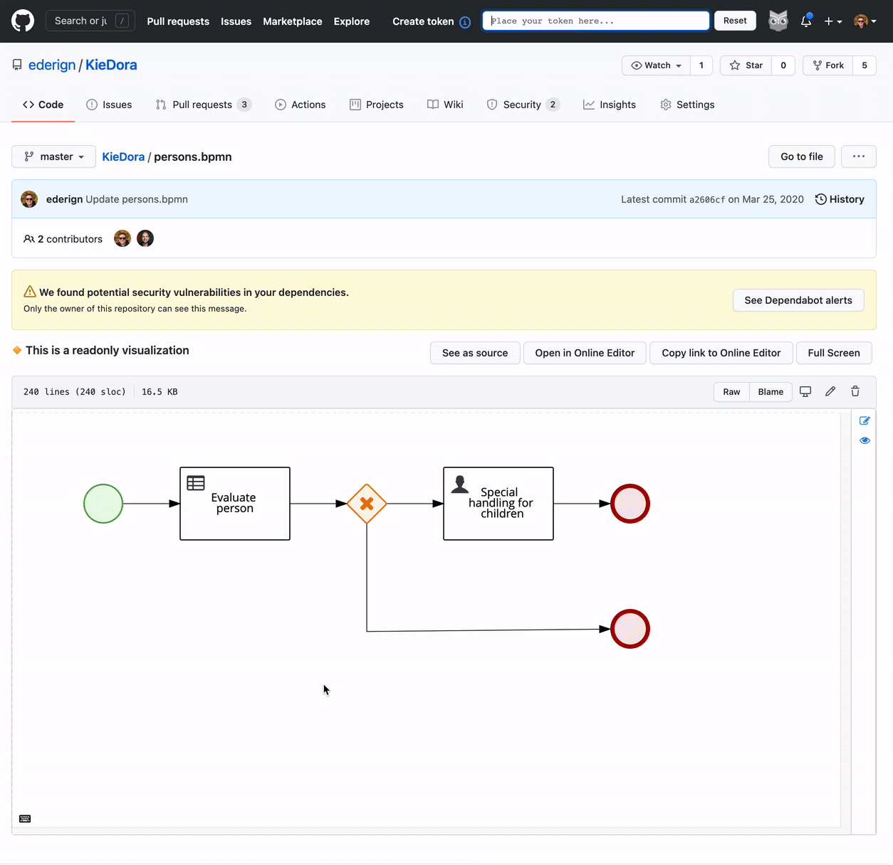
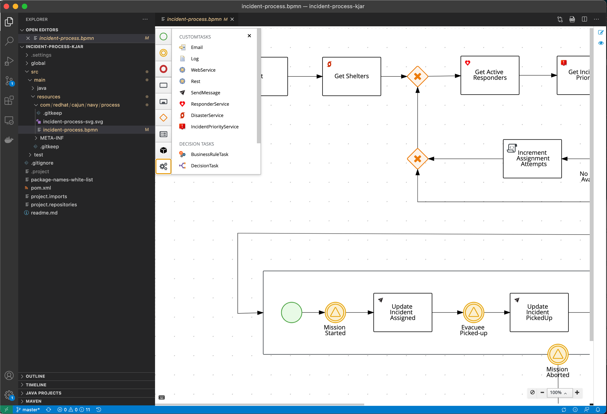
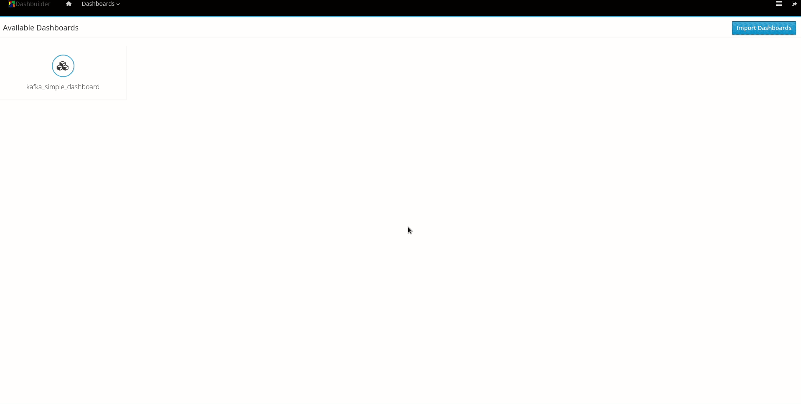
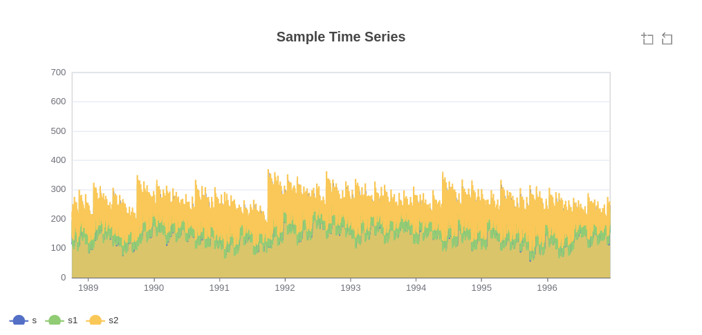

Design Tools Highlights on Kogito and Business Central, April 2021
In the last months, the Design Tools Team released many cool new features on Kogito Tooling 0.9.0 and Business Central 7.52.0. This post will do a quick overview of those. I hope you enjoy it!
Dashbuilder Programmatic Layout API
Until the launch of this new API, the only way to create dashboards on Dashbuilder was via drag and drop on Layout Editor. Now, users can create their Dashboards, pages, components, and data sets directly on Java.
Here is an example of the usage of such API:
| import org.dashbuilder.dataset.* | |
| import org.dashbuilder.displayer.DisplayerSettings; | |
| import org.dashbuilder.dsl.factory.component.ComponentFactory; | |
| import org.dashbuilder.dsl.factory.dashboard.DashboardFactory; | |
| import org.dashbuilder.dsl.model.* | |
| import org.dashbuilder.dsl.serialization.* | |
| import static java.util.Arrays.asList; | |
| import static org.dashbuilder.dataset.DataSetFactory.newDataSetBuilder; | |
| import static org.dashbuilder.displayer.DisplayerSettingsFactory.newBarChartSettings; | |
| import static org.dashbuilder.dsl.factory.navigation.NavigationFactory.*; | |
| import static org.dashbuilder.dsl.factory.page.PageFactory.*; | |
| public class SimpleDashboard { | |
| public static void main(String[] args) { | |
| DataSet dataSet = newDataSetBuilder().column("Country", ColumnType.LABEL) | |
| .column("Population", ColumnType.NUMBER) | |
| .row("Brazil", "211") | |
| .row("United States", "328") | |
| .row("Cuba", "11") | |
| .row("India", "1366") | |
| .row("China", "1398") | |
| .buildDataSet(); | |
| DisplayerSettings populationBar = newBarChartSettings().subType_Column() | |
| .width(800) | |
| .height(600) | |
| .dataset(dataSet) | |
| .column("Country") | |
| .column("Population") | |
| .buildSettings(); | |
| Page page = page("Countries Population", | |
| row("<h3> Countries Population </h3>"), | |
| row(ComponentFactory.displayer(populationBar))); | |
| Navigation navigation = navigation(group("Countries Information", item(page))); | |
| Dashboard populationDashboard = DashboardFactory.dashboard(asList(page), navigation); | |
| DashboardExporter.get().export(populationDashboard, | |
| "/path/to/export.zip", | |
| ExportType.ZIP); | |
| } | |
| } |
It will generate the following dashboard:

We also introduced a “dev mode” to Dashbuilder Runtime, which automatically updates the Dashbuilder Runtime while developing and exporting the ZIP. Soon, we will publish a blog post with more details about this new feature, but meanwhile, a sneak peek of authoring workflow using it:

DMN Editor – Enhanced code-completion for Literal FEEL expressions
Context-aware code completion is one of the most important features an IDE can provide to speed up coding, reduce typos and avoid other common mistakes. On Kogito Tooling 0.9.0 release, we introduced enhanced code-completion for Literal FEEL expressions.
Check out this video:

See this full blog post for details.
BPMN Editor – Read-Only mode
Since October, we also ship our editors as a standalone npm package. One of my favorite features of the standalone is the read-only mode because it is really useful for diagram visualization. Now, this mode is also supported on BPMN.
The read-only mode is also used for the visualization of diagrams on our Chrome Extension.

Work Item Definition support improvements
To evolve our Work Item Definition support on Kogito Tooling BPMN editor, we included on 0.9.0 a lot of improvements in this area, primarily related to a better parsing mechanism and also better compatibility with Business Central. Now, we also search for wids and icons the ‘global’ directory used on BC.

Dashbuilder Prometheus Data Set Provider
Dashbuilder can read data from multiple types of data set sources, including CSV, SQL, ElasticSearch, and Kie Server. Since Business central 7.50.0 Final, we introduced a new type of provider for data sets: Prometheus.

Prometheus is the standard for collecting metrics. It has connectors to very well-known systems, such as Kafka and metrics can be easily consumed from third-party systems. Furthermore, Kie Server by default also exports Prometheus metrics! See a sample Dashboard based on Prometheus data:

For a full description of this new feature, take a look at this blog post.
Dashbuilder Kafka Data Set Provider
We also recently introduced Dashbuilder support for Kafka data sets. Kafka is the standard event streaming platform for cloud applications and RHPAM/Kogito systems expose metrics using Kafka, so this is the reason why we added Kafka support on Dashbuilder as a data set provider.

Soon we will publish a blog post with more details about this new feature.
Dashbuilder Time Series Displayer
This new component represents time-series metrics to smoothly support the new Prometheus data-set provider.

Now, you can provide a custom dataset or Prometheus metrics and create visualizations of your time series data on a line or area chart using Dashbuilder. See this blog post for more details.
GWT 2.9 and JDK11 upgrade
After a collective effort involving many people from a lot of different teams, we also did two major upgrades on our codebase, supporting JDK11 compilation and GWT 2.9 on Business Central. This is a huge effort in a sizable codebase, so congrats to everyone involved!
Other important issues and improvements:
BPMN:
- KOGITO-3853 Move the structure option to the top of the Data Type drop-down
- JBPM-9597 – [BPMN] Open subprocesses in a new editor on BC only
- RHPAM-3207 Stunner – Text area for scripts is cropped/shifted
- RHPAM-3250 Stunner – Not all illegal characters are removed from Data Object name
- KOGITO-3528: Erase of WID ‘nodes’ types
DMN:
- KOGITO-3853 Move the structure option to the top of the Data Type drop-down
- DROOLS-6181 Allow sorting in guided decision table when clicking the column name
SceSim
- DROOLS-5775 Test Scenario does not support nested Enum type attributes
- DROOLS-6075 Scenario Simulation type error popup when constraint applied to DMN data type
- DROOLS-5876 Display actual test results instead of a generic message
- KOGITO-4190 SceSim runner does not display reason for failure
Thank you to everyone involved!
I would like to thank everyone involved with this release, from the excellent KIE Tooling Engineers to the lifesavers QEs and the UX people that help us look awesome!

{kind=link}
{kind=link}
{kind=link}
{kind=link}